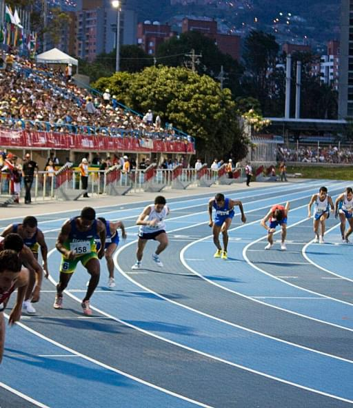
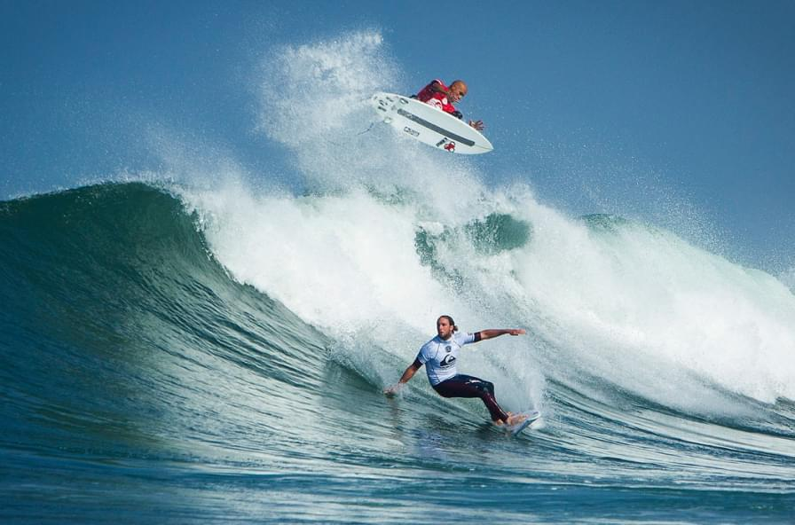
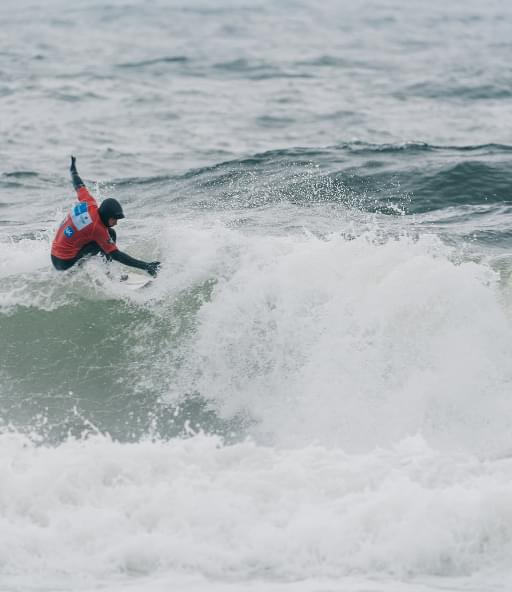

En 2023, América del Sur será sede de una serie de eventos deportivos que prometen ser candentes y emocionantes. Para este año se planean nuevas competencias y torneos de clasificación, atrayendo la atención de la comunidad deportiva de todo el mundo.
Copa América
Este torneo es considerado uno de los eventos más significativos en el mundo del fútbol. En 2023, la America's Cup se llevará a cabo en Sudamérica y promete ser un evento seguro, con todos los protocolos de seguridad necesarios. Los equipos nacionales de fútbol más fuertes competirán, brindando a los espectadores la oportunidad de ver peleas calientes al más alto nivel.

Juegos Sudamericanos
Este es un evento deportivo multidisciplinario que reúne a los mejores atletas de Sudamérica. En 2023 se llevará a cabo una nueva edición de los Juegos Sudamericanos, con deportes tanto tradicionales como nuevos y emocionantes. Los organizadores sin duda crearán un ambiente seguro para todos los participantes, y la competencia garantiza emociones calientes.


Competición de surf
América del Sur tiene varias playas conocidas por sus excelentes condiciones para la práctica del surf. En 2023, la región albergará una variedad de competencias y festivales de surf que ofrecerán nuevas oportunidades para atletas y espectadores. La seguridad será una prioridad y los participantes podrán experimentar olas calientes en las playas únicas de América del Sur.